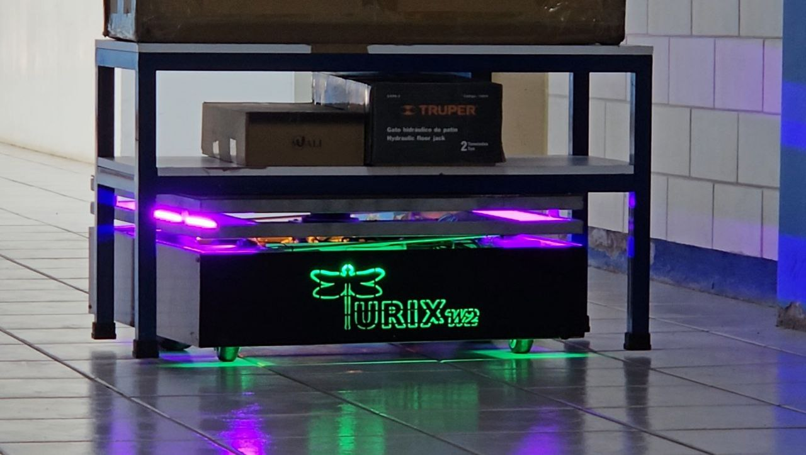

Specialized courses
Professional training in software, modeling, simulation, control, robotics, and AI.
We provide specialized training, consulting, and applied engineering solutions in MATLAB, Simulink, automation, robotics, ROS, artificial intelligence, control systems, digital twins, and autonomous technologies.

TURIX DYNAMICS combines research experience, engineering practice, and advanced technical training to help professionals, students, and organizations strengthen their technological capabilities.
Professional training in software, modeling, simulation, control, robotics, and AI.
Development and training in robotic systems, navigation, ROS, and autonomous platforms.
Engineering solutions for industrial automation, monitoring, and advanced control.
Customized technical programs for companies, universities, and laboratories.
TURIX DYNAMICS is evolving toward a more commercial and technology-driven identity without losing its technical strength.
Modeling, simulation, analysis, and control design for academic and industrial applications.
Hands-on training in mobile robots, ROS2, perception, and autonomous navigation.
Instrumentation, digital control, sensing, and intelligent systems for industry.
Diagnostics, computer vision, and machine learning applied to real systems.
Modeling, control strategies, validation, and project definition for complex systems.
Proof-of-concept support, sensor integration, and experimental development.
Monitoring, fault detection, and analytics using data-driven and AI-based methods.
Tailored programs for technical teams, companies, and universities.
Whether you need a specialized course or support for an applied engineering project, TURIX DYNAMICS can help.